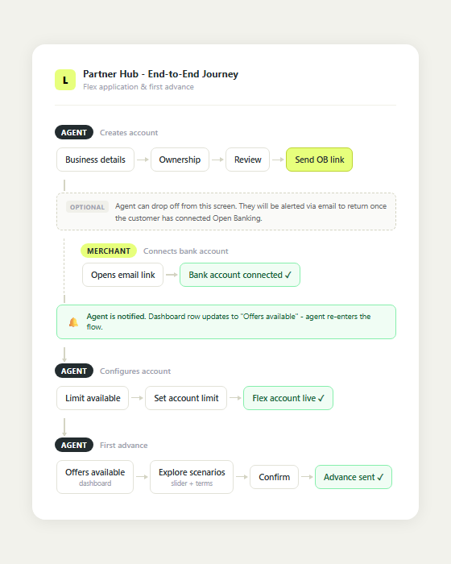
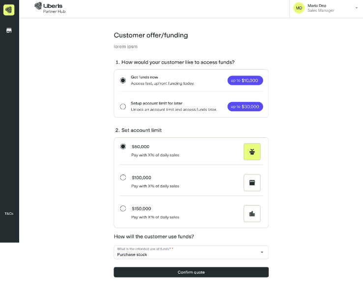
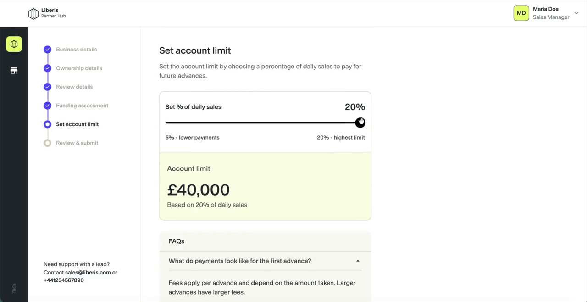

Product Designer: Design Strategy, User Research, UX/UI Design
Team
PMEngineersPartner ManagersPartner Sales Agents
Scope
End-to-end journey design, user research, prototyping, responsive UX/UI and delivery
Timeline
Q1–Q3 2026
The problem
Flex Advance was a new line-of-credit-style funding product, but Liberis’s partner sales agents had no way to offer it through Partner Hub. I led the end-to-end design from account creation to first advance, including planning and moderating user testing, designing the responsive journey and working with engineers through launch.
What made this hard
The hardest part was separating three similar-looking tasks: using Open Banking to verify revenue and calculate an accurate quote; using Estimated Figures as an application route when verification was not possible; and giving agents a non-committal preview they could discuss before a merchant was ready to apply. The experience also had to show how the selected percentage of daily sales determined the reusable limit, then help agents explain what a first advance from that limit would cost.
The solution and impact
I connected account creation, funding assessment, limit setup and first advance in one responsive journey. I kept limit setup separate because knowing what a merchant could access did not mean they were ready to borrow.
Testing showed that agents discussed revenue monthly and annually, so I supported both formats. I also advocated for an indicative cost calculator because cost was central to the merchant’s decision, helping agents explain fees and total payback without starting an advance.
The launch funding-assessment screen placed Open Banking and Estimated Figures side by side because the initial goal was to give agents flexibility in how they provided revenue information to generate a quote. After launch, we decided to encourage greater use of Open Banking because verified revenue produced a validated, more accurate quote. When the Product Manager reported that 80% of agents were choosing Estimated Figures, I interviewed agents to understand why and learned that they saw it as faster than sending an Open Banking link. I then revisited the structure: in the revised design, Open Banking became the primary assessment route, Estimated Figures remained an alternative application route, and Funding Preview became a separate tool for non-committal conversations.
The journey enabled Liberis to launch Flex Advance with a new partner through Partner Hub, opening access to merchants who relied on their agent to manage the funding process and creating a new route to revenue.
The launch evidence created a clearer model for verified assessment and early cost conversations, which then informed the equivalent merchant journey. I tested the revised assessment with three partner agents. All three found value in the separate Funding Preview and the clearer Open Banking route, and the revision is now in implementation.
Launch: both routes were presented side by side to support flexible revenue entry.
Revised iteration, now in implementation: application routes and non-committal cost exploration are separated by purpose.
What I learned
Launch exposed a structural hierarchy problem: visual emphasis could not make Open Banking feel primary while both routes retained equal weight. I responded by separating indicative cost conversations from evidence-based applications. I tested that revised direction with three partner agents and it is now in implementation.
Designed the end-to-end Flex Advance funding journey in Partner Hub, from account creation to first advance, then refined the funding assessment screen using partner-agent feedback.
Role
Product Designer: Design Strategy, User Research, UX/UI Design
Team
PMEngineersPartner ManagersPartner Sales Agents
Scope
End-to-end journey design, user research, prototyping, responsive UX/UI and delivery
Timeline
Q1–Q3 2026
Overview
Flex Advance introduced a reusable funding limit rather than one fixed advance. Partner sales agents needed to assess merchants and set up the product on their behalf through Partner Hub, while explaining unfamiliar choices and costs clearly.
How might we help partner agents assess a merchant and confidently set up Flex Advance on their behalf?
I led the design end to end: mapping the multi-actor journey, defining the information hierarchy, planning and moderating research, designing the responsive experience and working with engineers through launch. After release, I used behavioural data and follow-up interviews to refine the funding assessment screen.
WHY IT WAS HARD
The funding assessment used either verified Open Banking data or Estimated Figures to calculate the merchant’s limit. The percentage of daily sales then affected how much funding was available, while taking the first advance remained a separate commitment. Agents needed to understand these relationships well enough to explain them during a live merchant conversation.
The process
Step #1: Mapping the Flex Advance funding journey
With no existing workflow to reuse, I mapped the actions and handoffs between the agent, merchant and Partner Hub. This clarified where agents could act independently, where merchant input or agreement was needed, and how system responses, such as displaying a Flex limit after Open Banking, shaped the next step.

The map established responsibilities, dependencies and handoffs before I designed the individual screens.
Step #2: Making the product mechanics understandable
With the overall journey defined, the main screen-level challenge was showing the relationship between two values: the percentage of daily sales used for payments and the reusable account limit. A higher percentage made a larger limit available, but it also meant a greater share of the merchant's daily sales would go towards payments. The interface needed to make that trade-off clear rather than presenting the percentage and limit as unrelated figures.
An early concept combined account-limit setup and the first-advance decision in one step, with preset limit options linked to percentages of daily sales. Partner agents wanted more flexibility to adjust that percentage, so I moved to a slider, allowing them to explore a wider range of payment and limit combinations.

Early concept exploring account-limit setup and the first-advance decision in one step, with preset limit options.
I placed the percentage control and resulting account limit in the same card so the cause and effect could be seen together. The slider labels explained the range from lower payments to the highest available limit. As the agent moved the slider, the highlighted limit updated directly beneath it and repeated the selected percentage, making it easier to explain how one value affected the other before the merchant agreed to it.

Changing the percentage of daily sales updates the reusable account limit, making the relationship visible before the agent confirms it with the merchant.
Establishing the limit did not automatically mean taking funding. I kept the first advance as a separate step so agents could establish the reusable limit first, then help the merchant choose an advance amount and understand its cost before confirming it.
Step #3: Designing the funding assessment and wider journey
Once the key product mechanics were clear, I designed the remaining screens needed to turn the map into a complete journey. Stages such as business details, ownership details and review could build on established Partner Hub patterns. Reusing familiar structures kept those interactions consistent and allowed me to focus more design effort on the parts that were specific to Flex Advance.
The funding assessment was the main branching point. Open Banking used verified revenue and produced the most accurate limit, while Estimated Figures let agents proceed with an indicative limit when Open Banking was not possible at that stage. Open Banking was still required later to verify revenue and provide a verified Flex limit. I designed the screen so agents could understand the purpose of each route, choose the appropriate one and continue into the relevant data-collection flow.
The funding assessment brought the verified Open Banking route and the Estimated Figures alternative together at a clear decision point.
I connected the screens in one clickable prototype so agents could experience the workflow as a whole rather than review isolated interactions.
Step #4: Testing the prototype with partner agents
Before launch, I ran moderated sessions with partner sales agents using a clickable prototype. I created the discussion guide and scenarios, facilitated each session and synthesised the findings. The sessions combined scenario-based walkthroughs, think-aloud observation and questions about how agents prepared for and supported merchant conversations.
Live conversations placed agents under pressure. Agents told me it was easy to forget product details while speaking with a merchant, particularly when explaining payments, fees and how the reusable limit worked.
Revenue inputs needed to match real conversations. The original journey asked for annual revenue only, but agents often discussed revenue in monthly terms.
The assessment routes served different levels of certainty. Open Banking used verified revenue to produce the most accurate limit. Agents still needed an alternative when it was not possible, as well as a non-committal way to discuss indicative funding before a merchant was ready to apply.
Synthesised from moderated pre-launch partner-agent sessions. Participant names, prototype access and commercially sensitive detail have been withheld.
Step #5: Translating the findings into the launch design
For launch, I visually prioritised Open Banking within the funding assessment as it used verified revenue to produce the most accurate limit. It was pre-selected, highlighted with colour and labelled “Fastest route,” with a checklist explaining its benefits. Estimated Figures remained available when Open Banking was not possible.
I also allowed agents to enter revenue monthly or annually, matching the language they used with merchants while keeping the assessment consistent.
Supporting live merchant conversations
To reduce the pressure on agents to remember every product detail, I added contextual FAQs covering common questions about payments, fees and the reusable limit. These acted as prompts for the agent and supported clearer, more consistent explanations to merchants.
The Product Manager initially did not see a need for a first-advance calculator. I advocated for it because merchants needed to understand indicative costs before committing and agents needed a clear way to explain them. The resulting FAQ calculator let agents adjust a hypothetical amount and show its fixed fee, percentage of daily sales and total payback without starting or confirming an advance.
Moving the FAQ slider updates the indicative fee amount and total payback so the agent can explain what a first advance could look like.
Step #6: Refining the funding assessment after launch
The Product Manager reported from the available post-launch data that 80% of agents were selecting Estimated Figures instead of Open Banking. This showed what agents chose, but not why. Technical issues with Open Banking may have contributed, while the launch design also kept both options in adjacent cards of the same size. Despite the pre-selection, colour treatment and “Fastest route” label, the two routes still had similar structural weight.
I revised the hierarchy so Open Banking became the sole primary card. Estimated Figures moved into a secondary application route, and the non-committal Funding Preview became a separate tool for discussing indicative amounts without creating or updating an application.
Open Banking was visually highlighted, but both routes still used the same card structure.
Revised iteration, now in implementation: Open Banking becomes the sole primary card, with Estimated Figures and Funding Preview separated by purpose.
Three routes became clearer. Open Banking became the primary application route because it used verified revenue data to establish an accurate Flex Advance limit. Funding preview became a separate, non-committal tool so agents could enter estimated figures and discuss a possible amount without saving it to the merchant's account or starting an application. Can't do Open Banking remained an application route, taking the agent to a dedicated estimated-figures screen where self-declared monthly or annual revenue could be used to create a quote linked to the application.
Processor selection also moved into its own step, showing only processors associated with the merchant rather than asking agents to search through irrelevant options.
Scroll inside the phone to exploreProcessor choice moved into its own dedicated step, showing only processors associated with the merchant.
Step #7: Validating the revised assessment
I built the revised assessment as a prototype using Figma Make so agents could move through the three routes rather than review static screens.
Recruitment was the real constraint. Partner agents are mostly freelance and work for our partners rather than for Liberis, so I had no direct route to their time and could not treat them as an internal research panel. Rather than wait for a larger sample, I worked out a process for reaching them through partner managers and fitting sessions around their own selling commitments. That got me three agents, which I treated as a check on the direction rather than a representative study.
All three found value in the separate Funding Preview and responded positively to Open Banking as the clearer primary route. The revised assessment is now in implementation.
Outcome
The work took Flex Advance from a new product with no operational journey to a live end-to-end experience actively used by partner agents. Agents can now set up Flex Advance on a merchant's behalf, establish a reusable funding limit and take the first advance through Partner Hub.
Launching the journey also gave the team real behavioural evidence about how agents assessed merchants in practice. That evidence informed further improvements to the funding assessment, including a clearer primary route to an accurate limit and a separate Funding Preview for non-committal conversations.
RESULT
A shipped 0-to-1 Flex Advance journey actively used by partner agents to establish reusable merchant limits and take first advances, with the funding assessment refined through testing and post-launch behaviour.
The shipped Partner Hub journey from account creation through to the first advance.
From design to shipped product
DELIVERY
I worked closely with engineers to turn the Flex Advance journey into production behaviour, accounting for Open Banking states, processor data, funding rules and the relationship between daily-sales percentage and reusable limit. I stayed involved during implementation to resolve edge cases and ensure the calculations, choices and explanations remained accurate in the shipped experience.
Our engineers implement designs using Claude Code, so I used Figma's AI agent to rename the frames that mattered most to implementation in bulk, giving the handoff a consistent structure to read from.
What I learned
Post-launch behaviour challenged an assumption in the launch design. Although Open Banking was pre-selected, highlighted and labelled “Fastest route,” 80% of agents still chose Estimated Figures. Technical problems with Open Banking may have contributed, but the interface taught me that visual styling cannot establish a clear hierarchy when the underlying layout still presents two routes as equivalent.
I also learned that an indicative conversation, an evidence-based assessment and a confirmed first advance are different tasks, with different levels of certainty and commitment. Organising the experience around what the agent was trying to achieve, rather than only the type of data being entered, gave each one a clearer and more honest role. Separating these levels of certainty is a core design decision, not a detail.